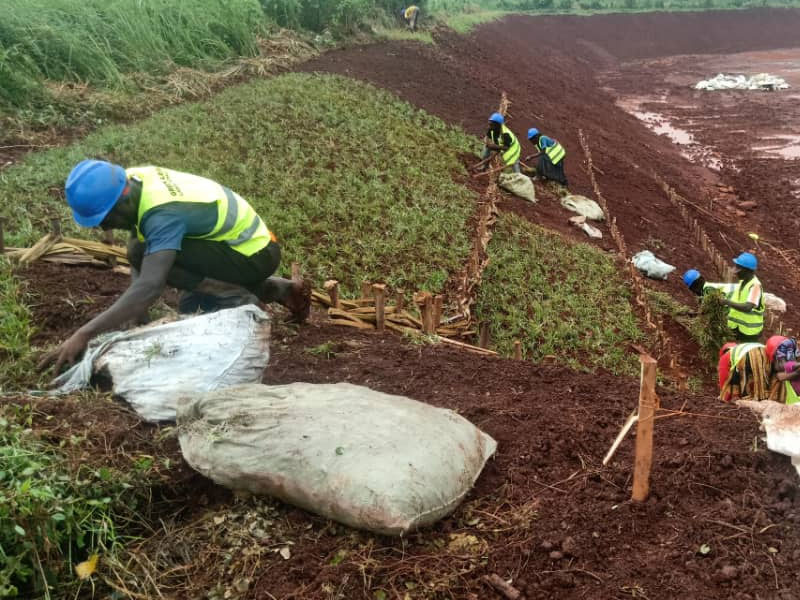

Seedling distribution: Providing a number of trees seedling good for different environment, including
fruit trees in timber and indigenous species for planting in homes,garden and community Land.
Community engagement: Mobilizing local communities to participate in tree planting activities often with
awareness campaigning on the importance of tree conservation.
Comprehensive Landscaping Solutions
Emhancing the beauty and functionality of our outdoor services
More Services offered
Providing tree seeding for community climate change planting organising large scale tree planting, mobalising
in educating communities on sustainable tree planting practices, establishing tree nurseries managing carbon offset project through
tree planting.
Agro Forestry programs
Carbon offset plans: Offering deal for individual and companies to offset the carbon footprint by
planting species that contribute to Carbon sequestration.
Tree clubs programs:At school we ensure that student are tree plant initiatives of fostering
environmental awareness.

Monitoring and evaluation: Always the survival percentage rate of planted trees and can be assess to the
impact of tree planting project.